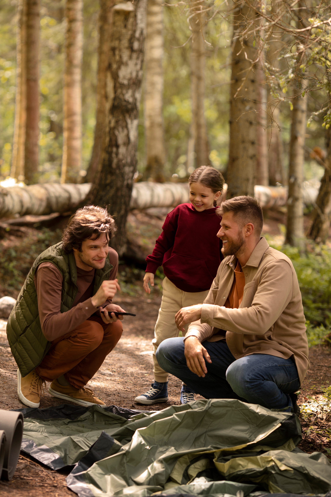

For tung rygsæk
Ekstra udstyr bliver hurtigt til mere vægt. Start med det nødvendige.
Her er en række begynderfejl og gode råd enhver vandrer bør undgå.
Ekstra udstyr bliver hurtigt til mere vægt. Start med det nødvendige.
Sko er det første, der er værd at bruge penge på. Gå dine egne til, før du tager afsted.
Selv en god sovepose bliver kold, hvis underlaget ikke isolerer. Tag også varmt tøj med til natten.
Bomuld holder på fugten og gør dig kold. Vælg uld eller syntetisk tøj, og tag det på i lag.
Mange begyndere går for stærkt fra start og løber tør for energi. Gå i et roligt tempo, og hold korte pauser.
Mørket kommer tidligt, så lygten skal være med. Har du glemt en lygte, har de fleste mobiler en lommelygte.

Ja. Der er ingen fast minimumsalder, men til den første sheltertur er børn fra ca. 4–5 år ofte et godt udgangspunkt. Vælg en kort tur, mildt vejr og et shelter tæt på parkering og toilet.
Du må gerne tage din hund med, men den skal være i snor i skoven.
Det afhænger af shelteret. Nogle shelters kan bookes på forhånd, mens andre fungerer efter først-til-mølle-princippet. Tjek altid den enkelte shelterplads, inden du tager afsted.
På Naturstyrelsens bookbare shelters giver en booking fortrinsret til selve shelteret – ikke til hele området.
Ved et først-til-mølle-shelter kan andre have taget pladsen før dig. Hav derfor gerne en alternativ shelterplads i nærheden, som en plan B.
På mange af Naturstyrelsens primitive overnatningspladser må du også slå dit eget telt op ved siden af, hvis shelteret er fyldt.
Ikke nødvendigvis. Nogle shelterpladser har både toilet og drikkevand, mens andre ikke har nogen af delene.
Tjek faciliteterne på den enkelte plads inden turen, og medbring vand, hvis du er i tvivl.
Det er forskelligt afhængigt af hvem der forvalter området. Som udgangspunkt må du: